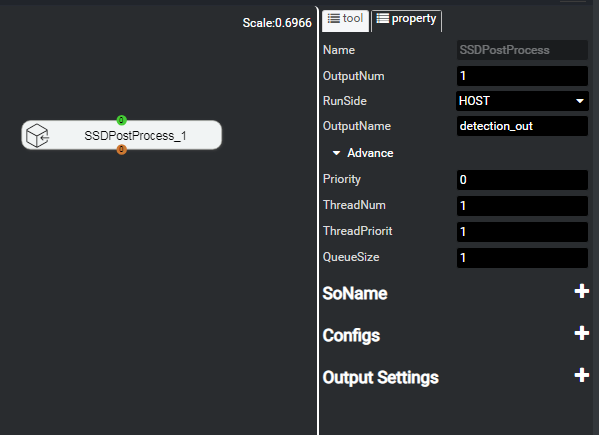
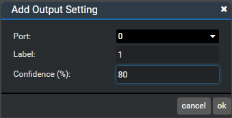

Setting the Post-Processing Output of the Detection Network
After engine orchestration, you need to configure the output ports and output conditions.
Setting the Number of Output Ports
Drag the SSDPostProcess or FasterRCNNPostProcess node to the canvas, click the node in the canvas, and set OutputNum to 1 （the value range is 0 to 15）, as shown in Figure 1. If OutputNum is greater than 0, a corresponding number of output ports are displayed below the post-processing node, ready for connection.
Figure 1 Setting OutputNum for the detection network
Setting the Output Conditions
If OutputNum is greater than 0, expand the Advance drop-down list, the Output Settings item is displayed, as shown in Figure 2.
Figure 2 Finding Output Settings
 NOTE:
NOTE:
In the multi-network connection scenario, the ThreadNum parameter in the SSDPostProcess or FasterRCNNPostProcess post-processing node must be set to 1. That is, only a single thread is supported.
The ThreadNum parameter of the MindInferenceEngine node must also be set to 1.Click next to Output Settings. A dialog box is displayed, as shown in Figure 3. Table 1 describes the parameters on the Upgrade page.
Figure 3 Setting the output conditions
Table 1 Parameters for setting the output conditions
NOTE:
If no filter criterion is configured for a port, all network processing results are output to the next port.You can set multiple filter criteria. They are displayed in the Output Settings area, as shown in Figure 4. The confidence level can be quickly modified here.
Figure 4 Setting filter criteria

To delete a filter criterion, right-click Setting0 and choose delete from the shortcut menu, as shown in Figure 5.